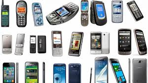

📞 DISPOSITIVOS ANTIGUOS (TELÉFONOS BÁSICOS O PRIMEROS CELULARES)
1. Llamadas de voz → La función principal era comunicarse mediante llamadas. 2. Mensajes de texto (SMS) → Solo permitían enviar textos cortos, sin emojis ni imágenes. 3. Agenda de contactos → Se podían guardar pocos números y sin información adicional. 4. Batería duradera → Podían durar varios días sin cargarse debido a su bajo consumo de energía. 5. Juegos básicos → Como el famoso "Snake" en los Nokia, sin gráficos avanzados. 6. Antenas externas y teclados físicos → La señal dependía de antenas grandes y tenían botones físicos. 7. Nada de internet ni cámaras → Solo algunos modelos más avanzados tenían funciones muy limitadas.
📱 DISPOSITIVOS ACTUALES (SMARTPHONES) 1. Llamadas y videollamadas → Se pueden hacer llamadas de audio y video en tiempo real. 2. Mensajería instantánea → WhatsApp, Telegram y otras apps permiten enviar fotos, videos, audios y emojis. 3. Almacenamiento en la nube → Contactos, fotos y documentos pueden guardarse y sincronizarse en la nube. 4. Batería recargable y rápida → Aunque dura menos, la carga rápida permite llenarla en minutos. 5. Juegos avanzados → Gráficos en 3D, realidad aumentada y juegos en línea. 6. Pantallas táctiles → Sin botones físicos, con mayor resolución y adaptadas para multitarea. 7. Internet y redes sociales → Se pueden ver videos, usar Google, redes sociales y más. 8. Cámaras de alta calidad → Fotos en 4K, filtros avanzados e inteligencia artificial. 9. Seguridad avanzada → Huella dactilar, reconocimiento facial y protección de datos. 10. Pagos móviles → Se puede pagar en tiendas con el celular, sin necesidad de tarjetas físicas
● LAS DIFERENCIAS SON MUY GRANDES A DIFERENCIA DE HACE 10 AÑOS O MAS
● MEJOR RAPIDEZ ESTAN SON ALGUNAS CARACTERISTICAS
● Los dispositivos antiguos servían principalmente para comunicación básica, permitiendo a las personas hacer llamadas y enviar mensajes de texto. Su función principal era mantener el contacto a distancia sin necesidad de una carta o un teléfono fijo. Además, tenían baterías de larga duración y eran más resistentes, pero sus capacidades eran muy limitadas, ya que no permitían acceso a internet ni el uso de aplicaciones.
● Por otro lado, los dispositivos actuales (smartphones) son herramientas multifuncionales que van mucho más allá de la comunicación. Ahora sirven para acceder a internet, trabajar, estudiar, hacer videollamadas, usar redes sociales, realizar pagos móviles, tomar fotos y videos de alta calidad, usar GPS para ubicaciones y entretenimiento como juegos, música y películas. También cuentan con medidas de seguridad avanzadas, como reconocimiento facial y huella dactilar.
● En resumen, los teléfonos de antes solo servían para llamadas y mensajes, mientras que los actuales son dispositivos inteligentes que facilitan la vida en muchos aspectos, aunque también pueden generar dependencia y distracción si no se usan con moderación.
3-QUE VENTAJAS Y DESVENTAJAS TIENEN LOS TELEFONOS DE HOY EN DIA PARA EL SER HUMANO
Ventajas y desventajas de los teléfonos actuales ✅ Ventajas: Comunicación instantánea: Permiten llamadas, videollamadas y mensajes en tiempo real. Acceso a información: Puedes buscar cualquier dato en internet en segundos. Entretenimiento: Juegos, música, videos y redes sociales en un solo dispositivo. Trabajo y educación: Aplicaciones para estudiar, tomar clases en línea y trabajar desde cualquier lugar. Herramientas útiles: GPS, calculadora, cámara, asistentes de voz y más. ❌ Desventajas: Dependencia y adicción: Muchas personas pasan demasiado tiempo en el celular. Distracción: Puede afectar la concentración en el trabajo o estudios. Problemas de salud: Uso excesivo causa fatiga visual, mala postura y problemas de sueño. Privacidad y seguridad: Riesgo de hackeos, fraudes y robo de datos personales. Contaminación digital: La producción y desecho de teléfonos generan impacto ambiental. 📌 Conclusión: Los teléfonos actuales son herramientas poderosas, pero es importante usarlos con responsabilidad para evitar sus efectos negativos.
INSERTAR UN IMPENVINCULO EXTERNO EN UN TEXTO
ir a el portal de historia del telefono
La evolución del teléfono móvil: del ladrillo a la maravilla de bolsillo
1-Historia del Teléfono 2- Evolución Tecnológica del Teléfono 3-Impacto del Teléfono en la Sociedad
 CONCLUCION:
La evolución del teléfono ha sido un proceso clave en el desarrollo de la comunicación humana. Desde su invención en 1876 por Alexander Graham Bell hasta los modernos smartphones, el teléfono ha pasado por diversas transformaciones tecnológicas que han mejorado la conectividad global. La transición de los teléfonos fijos a los dispositivos móviles, junto con la integración de Internet, ha cambiado la forma en que las personas se comunican, trabajan y acceden a la información. Hoy en día, el teléfono no es solo un medio de comunicación, sino una herramienta multifuncional que facilita tareas diarias y contribuye al desarrollo social y económico. Con la llegada de tecnologías como el 5G, la inteligencia artificial y la realidad aumentada, el futuro de la telefonía promete seguir evolucionando, ofreciendo nuevas posibilidades para la conectividad global. An mejorado antes solo eran cables y solo uso para llamada Haora ya tienen erramientas muy buenas como camaras de alta calidad llamadas sin cables uso para investigar cosas desde el teléfono y mucho mas la mayoría de las personas que usan mas los teléfonos para estudios son los jóvenes de entre 6 a 18 años para trabajó de 18 a 50 y para adultos mayores de 50 a 80 años Pero los que usan mucho mas los teléfonos son los jóvenes ya que usan el teléfono para juegos, tiktok ,platicaré con las novias 24/7 Según la Encuesta Nacional sobre Disponibilidad y Uso de Tecnologías de la Información en los Hogares (ENDUTIH) 2023, realizada por el INEGI, el uso de teléfonos celulares en México varía según el grupo de edad. A continuación, se presentan los porcentajes de uso de teléfono celular por diferentes grupos etarios: ● 18 a 24 años: Este grupo mostró el mayor porcentaje de uso, con un 96.7% de personas utilizando teléfono celular. ● 25 a 34 años: El 94.1% de las personas en este rango de edad reportaron usar teléfono celular. ● 12 a 17 años: El uso de teléfonos celulares en este grupo fue del 92.4%. ● 35 a 44 años: Un 89.7% de las personas en este rango de edad utilizaron teléfono celular. ● 55 a 64 años: Este grupo mostró un incremento significativo, alcanzando un 66.7% de uso. ● 65 años o más: El 39.2% de las personas en este grupo de edad reportaron usar teléfono celular.